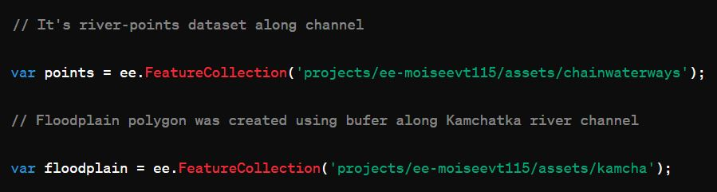
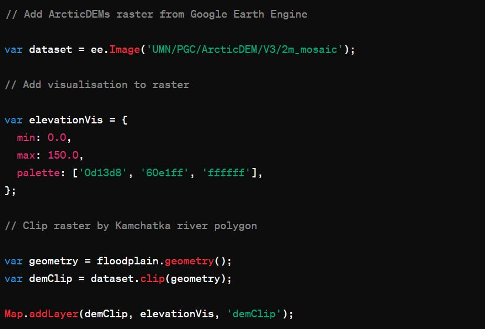
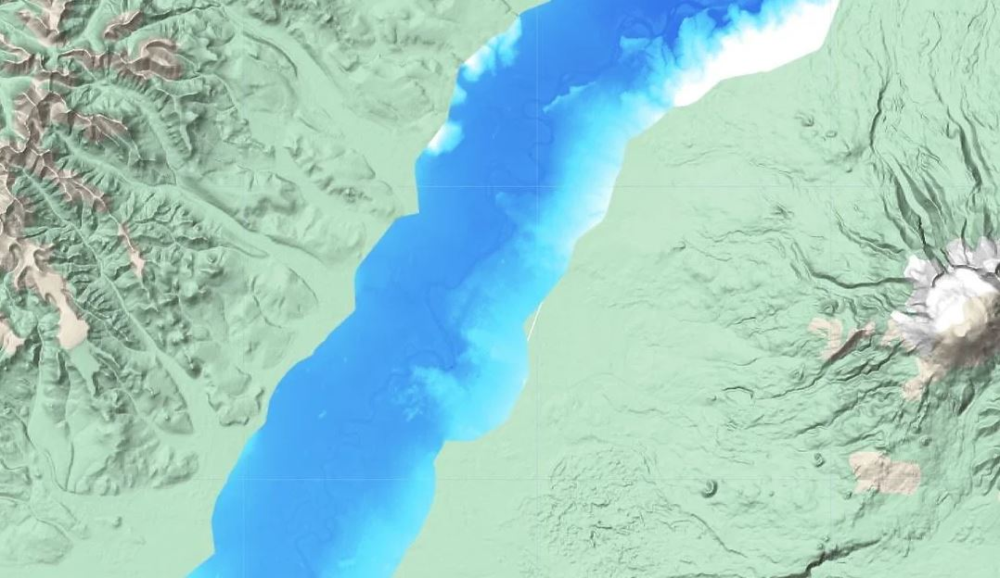
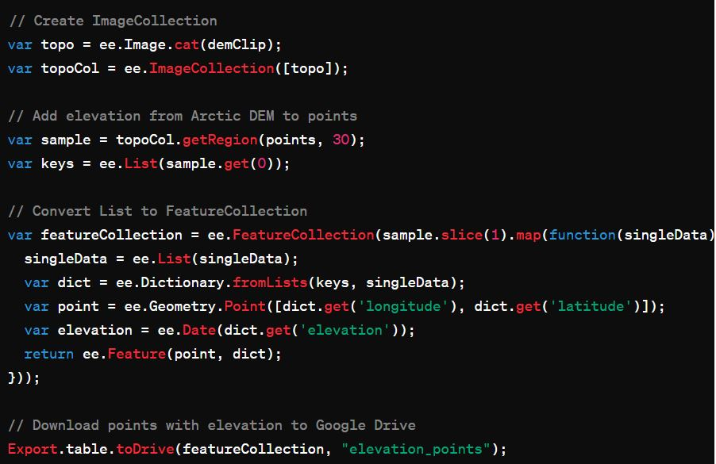
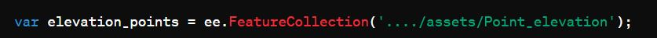
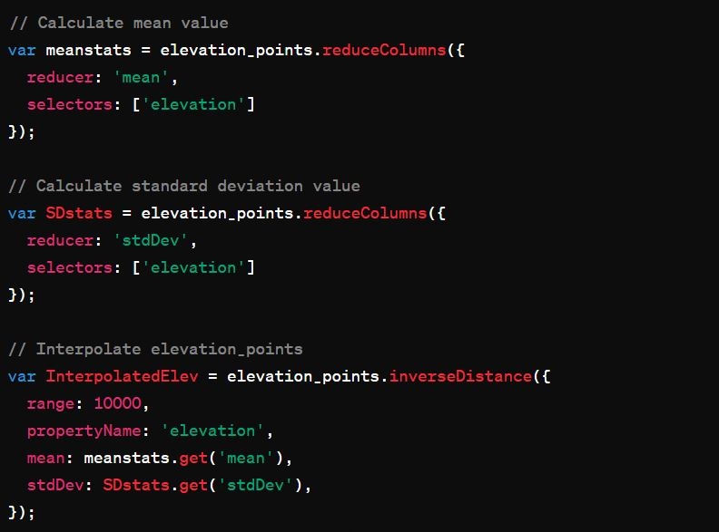
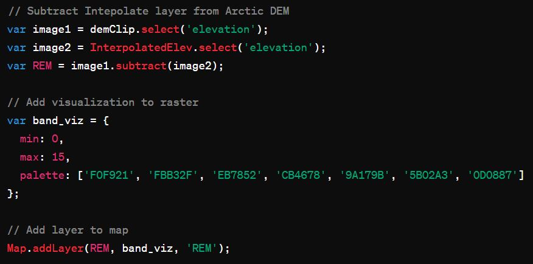
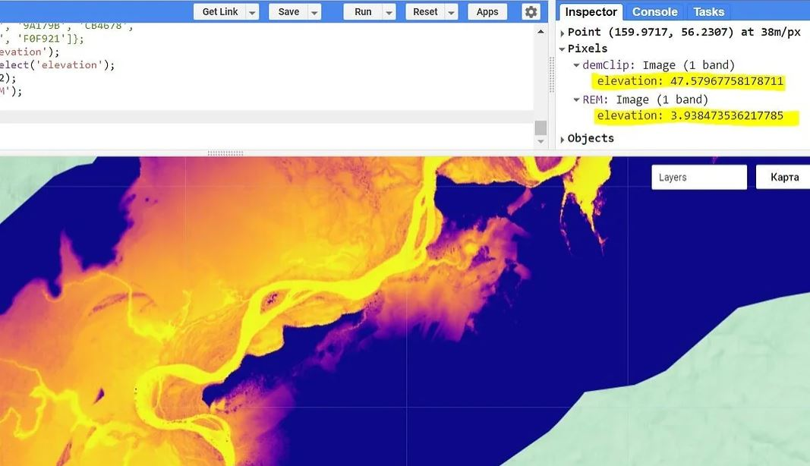

Relative elevation model (REM) and Google Earth Engine
In this tutorial you can learn, how convert a digital elevation model (DEM) along the Kamchatka river into a relative elevation model (REM) using Google Earth Engine. This manual includes imagery processing and interpolation with Inverse Distance Weighted (IDW) method. The guide was inspired by Daniel Coe, who made it for QGIS.
The example dataset includes an ArcticDEM (digital terrain model) the Kamchatka River valley in Kamchatka peninsula and polyline shp-layer (Kamchatka channel) from OSM (OpenStreetMap). You can do the project in the Google Earth Engine, except for one step. This step may be easier to make in QGIS, ArcGIS etc.
REM (Relative elevation model) is used in observation of terraces, floodplains, oxbow lakes etc. You can read more about REMs by this link. Usially, specialists operate the LiDAR imagery, but it requires financial costs. However, even without LiDAR imagery, we can get a good result using open data. SRTM is useless for this purpose due to low spatial resolution (~30 meters), but ArcticDEM fits well (~2 meters).
First of all, we should register account in Google Earth Engine. Next we load the floodplain contours of the Kamchatka River and the layer with points along the channel (chainwaterways) to the project. We cheated a little bit and preprocessed the channel line in QGIS - we splited the line into points with equal interval of 80 m (this is the approximate average width of the Kamchatka river channel).
In the next step, we add and clip raster from the Google Earth Engine database along the boundaries of the Kamchatka River floodplain and load it. It is made to reduce cloud computation. Thereby, the area includes the landforms of Kamchatka valley (floodplain, terraces, etc). Let's look at the result:
  ArcticDEMs clipping by floodplain Kamchatka riverLet's add elevation values to the point layer (we want know the altitude values in each point). For this purpose we convert the ArcticDEM image to imageCollection and use getRegion() function to add the elevation values from the image. Next, we modify the list to FeatureCollection and upload the file to Google Drive for further processing.
Next we remove some points that have no elevation values as well as negative values. We did this in QGIS. It can probably be done in Google Earth Engine as well. After processing points, we uploaded the file to our project.
We calculate the mean and standard deviation to interpolate our points with IDW method.
On the next step we subtract InterpolatedElev from the image with elevation that we loaded previously (ArcticDEM image). Let's add a palette for amazing visualization.
Finally, we obtain a REM raster with elevation relative to the Kamchatka riverbed. Also, we can download the raster to the desktop or cloud (e.g. Google Drive).
 REM of Kamchatka river valleyArcticDEM considers tree heights which can distort the result. Nevertheless, ArcticDEM is in open access, unlike Lidar imagery. Therefore, we got a satisfactory result, which is good fit for environmental science projects. Also we can process larger dataset then using QGIS.